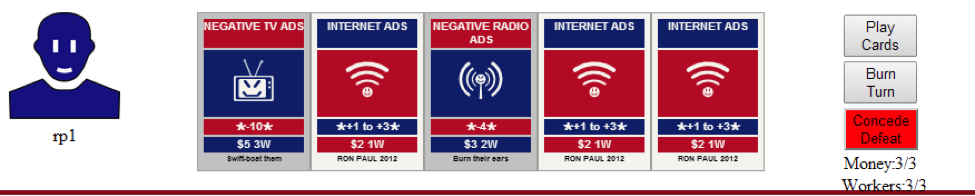
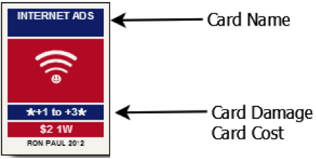
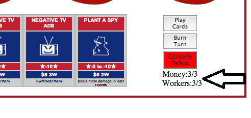
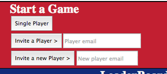

After creating an account, you will be ready to battle live opponents or the A.I. to hone your skills. The goal of the game is to win a majority of support (out of 100%) in a majority of districts. You can play cards and compete in a debate mini-game to affect the score in each district.

After starting a game, you will be presented with a map of the “districts”, as well as a hand of five randomly drawn cards, as shown below.
The anatomy of a card is explained below:

(This card costs two “Money” and one “Worker” resource to play, and shifts the percentage split in your favor by 1-3 percentiles)
You start each district with three money and three worker resources; you can play as many cards as you like in a given turn as long as you do not exceed your current resource cap. At the start of each new turn, your resources replenish; try selecting cards each turn which most efficiently use your resources.
To play cards, you simply click them and they will indicate they have been selected. Click a card again to return it to your hand. Your resource pool will deplete by the cost of the card to indicate the remaining resources after selecting the card(s). Then click the “Play Card” button to complete your turn. The district score will update reflecting the change in voter support. You will wait for your opponent to complete their turn, and then you start again. After ten turns, a debate event occurs, in which your goal is to dodge pesky issues, by clicking the mouse to jump over obstacles. At any time you can close the browser or return to the lobby, and your game will be waiting for you when you return.

In order to increase your resource pool cap (allowing you to play better cards, or a greater number of cards in a turn), you can Burn a Turn, during which your candidate stumps and gathers money and workers. Burning turns early in a district battle can give you a great advantage, as you can then select more cards to play, or more powerful expensive cards.

The game lobby displays three ways for you to start a game; Single Player, Invite a Player, and Invite a New Player. You can invite a friend (or enemy) to battle against you simply by entering their email in the New Player text field and clicking the Invite New Player button. If a user is already registered, you can enter their email in the “Invite a Player” text field, and clicking that button.
Current games are displayed in a list at the top of the screen, and current champions are displayed at the bottom in a leaderboard. Click any user entry in the leaderboard to automatically enter their email in the “Invite A Player” field.
You can have up to ten games at a time; if you want to end a game quickly you can click the “Concede” button to surrender and end said game. If you invite a player to a new game and want to cancel the invite, you may do so by clicking on the game in your game list, as long as the other player has not accepted your invite yet.